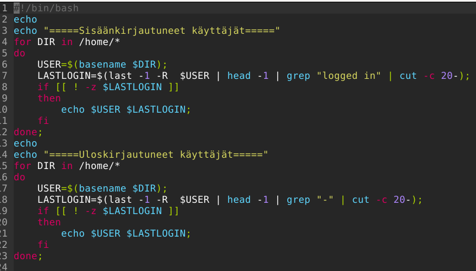
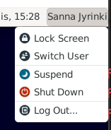
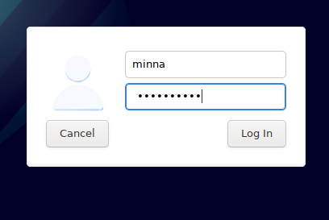
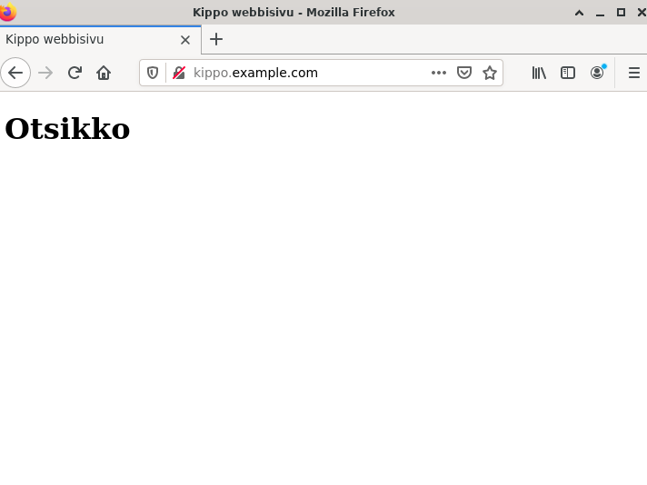
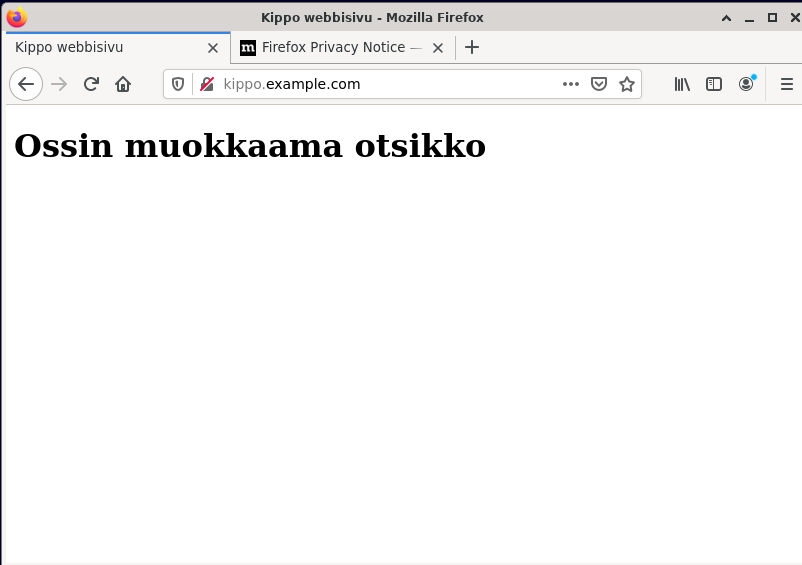
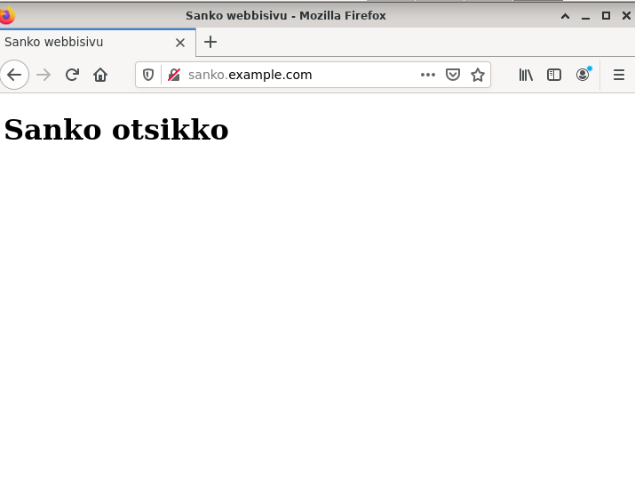
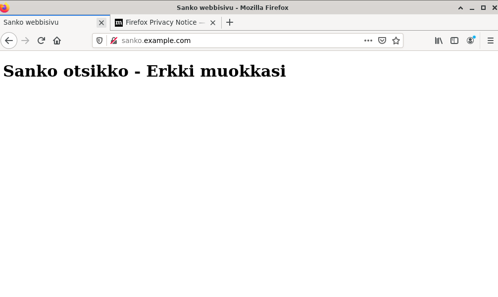

Pikalinkit
Cooper, M. 2014. Advanced Bash-Scripting Guide Luettavissa https://tldp.org/LDP/abs/html/ . Luettu 13.3.2022.
Karvinen, T. 2022. Linux palvelimet 2022. Luettavissa https://terokarvinen.com/2021/linux-palvelimet-ict4tn021-3018/ . Luettu 13.3.2022.
Karvinen, T. 2021. Final Lab for Linux Server Course 2021 Autumn Luettavissa https://terokarvinen.com/2021/final-lab-for-linux-server-course-linux-palvelimet-ict4tn021-3016/?fromSearch=arvioitava . Luettu 13.3.2022.
Karvinen, T. 2018. Name Based Virtual Hosts on Apache – Multiple Websites to Single IP Address. Luettavissa https://terokarvinen.com/2018/name-based-virtual-hosts-on-apache-multiple-websites-to-single-ip-address/?fromSearch=hosts. Luettu 13.3.2022.
Karvinen, T. 2007. Shell Scripting Luettavissa https://terokarvinen.com/2007/shell-scripting-4/ . Luettu 13.3.2022.
Karvinen, T. 2006. about users Luettavissa https://terokarvinen.com/2006/aboutusers-4/ . Luettu 13.3.2022.
Lisätään uusi käyttäjä 'minna', jotta tämän tehtävän komentoa voidaan testata. Käyttäjää ei aseteta superuseriksi.
$ sudo adduser minna
Tehdään micro-editorilla uusi komento 'kayttajat'.
$ micro kayttajat

Echo tulostaa. For loopissa loopata kaikki hakemistot /home/ hakemiston alla eli käyttäjien kotihakemistot. Ekassa loopissa tutkitaan käyttäjät, jotka ovat edelleen sisäänkirjautuneita eli joille last käskyn ensimmäisessä rivissä esiintyy 'logged in'. Tulostetaan näiden käyttäjien tunnus ja viimeisin login rivi. Toisessa loopissa puolestaan tutkitaan ne käyttäjät, jotka eivät ole enää sisäänkirjautuneita, eli last käskyn uusin rivi näyttää merkin '-' eli myös loppuajan kirjautumiselle. Tulostetaan nämä käyttäjät.
Säädetään käyttöoikeudet niin, että kaikki voivat ajaa komentoa (a=all, x=execute).
$ chmod a+x kayttajat
Testataan omassa kotihakemistossani /home/sanna komentoa.
sanna@sanna-virtualbox:~$ pwd
/home/sanna
sanna@sanna-virtualbox:~$ ./kayttajat
=====Sisäänkirjautuneet käyttäjät=====
sanna Sun Mar 13 11:48 still logged in
=====Uloskirjautuneet käyttäjät=====
minna Sun Mar 13 11:47 - 11:48 (00:00)
Vaihdetaan hakemistoksi /home, jolloin komentoa ei enää löydy
sanna@sanna-virtualbox:/home$ ./kayttajat
bash: ./kayttajat: No such file or directory
Tehdään skripti kaikille käyttäjille kaikissa hakemistoissa toimivaksi kopioimalla se hakemistoon /usr/local/bin/
sanna@sanna-virtualbox:~$ sudo cp kayttajat /usr/local/bin/
Nyt komento toimii muussakin hakemistossa
sanna@sanna-virtualbox:~$ cd /home
sanna@sanna-virtualbox:/home$ kayttajat
=====Sisäänkirjautuneet käyttäjät=====
sanna Sun Mar 13 11:48 still logged in
=====Uloskirjautuneet käyttäjät=====
minna Sun Mar 13 11:47 - 11:48 (00:00)
Kirjaudutaan käyttäjänä minna ja kokeillaan komentoa
 minna@sanna-virtualbox:~$ kayttajat
=====Sisäänkirjautuneet käyttäjät=====
minna Sun Mar 13 15:27 still logged in
sanna Sun Mar 13 11:48 still logged in
=====Uloskirjautuneet käyttäjät=====
Tehdään uusi skripti 'moikkaa', vaiheet on muuten samat kuin edellisessä kohdassa, mutta skriptin sisällä hyödynnetään parametria
sanna@sanna-virtualbox:~$ micro moikkaa
sanna@sanna-virtualbox:~$ cat moikkaa
#!/bin/bash
echo "Moi vaan $1";
sanna@sanna-virtualbox:~$ chmod a+x moikkaa
sanna@sanna-virtualbox:~$ ./moikkaa timo
Moi vaan timo
sanna@sanna-virtualbox:~$ sudo cp moikkaa /usr/local/bin/
[sudo] password for sanna:
sanna@sanna-virtualbox:~$ moikkaa
Moi vaan
sanna@sanna-virtualbox:~$ moikkaa paula
Moi vaan paula
sanna@sanna-virtualbox:~$ cd /etc
sanna@sanna-virtualbox:/etc$ moikkaa sanna
Moi vaan sanna
sanna@sanna-virtualbox:/etc$
Skriptin sisällä parametri otetaan kiinni $1, jossa 1 viittaa ensimmäiseen parametriin. Jos parametreja olisi monta, olisi eka parametri $1, toka $2, kolmas $3 jne.
Valitsin vanhan laboratorioharjoituksen syksyltä 2021, linkki tehtävään https://terokarvinen.com/2021/final-lab-for-linux-server-course-linux-palvelimet-ict4tn021-3016/?fromSearch=arvioitava
Aluksi loin uuden virtuaalikoneen VirtualBoxiin ja asensin siihen Debian11:n harjoituksen 1 ohjeella H1. En asentanut Debianiin mitään, vaan se oli puhdas asennus, ainostaan Guest Additionsin asensin, jotta näyttö skaalautuu koko ruudulle.
Suoritin koneella seuraavat käskyt ohjeesta, jotka menivät ok
sanna@sanna-virtualbox:~$ sudo apt-get update
[sudo] password for sanna:
Get:1 http://security.debian.org/debian-security bullseye-security InRelease [44,1 kB]
Hit:2 http://deb.debian.org/debian bullseye InRelease
Get:3 http://deb.debian.org/debian bullseye-updates InRelease [39,4 kB]
Get:4 http://deb.debian.org/debian bullseye/main Sources [8 626 kB]
Get:5 http://security.debian.org/debian-security bullseye-security/main Sources [109 kB]
Get:6 http://security.debian.org/debian-security bullseye-security/main amd64 Packages [121 kB]
Get:7 http://security.debian.org/debian-security bullseye-security/main Translation-en [77,5 kB]
Get:8 http://deb.debian.org/debian bullseye-updates/main Sources [1 868 B]
Get:9 http://deb.debian.org/debian bullseye-updates/main amd64 Packages [2 596 B]
Get:10 http://deb.debian.org/debian bullseye-updates/main Translation-en [2 343 B]
Fetched 9 025 kB in 2s (4 912 kB/s)
Reading package lists... Done
sanna@sanna-virtualbox:~$ sudo apt-get -y install wget
Reading package lists... Done
Building dependency tree... Done
Reading state information... Done
The following NEW packages will be installed:
wget
0 upgraded, 1 newly installed, 0 to remove and 112 not upgraded.
Need to get 964 kB of archives.
After this operation, 3 559 kB of additional disk space will be used.
Get:1 http://deb.debian.org/debian bullseye/main amd64 wget amd64 1.21-1+deb11u1 [964 kB]
Fetched 964 kB in 0s (4 677 kB/s)
Selecting previously unselected package wget.
(Reading database ... 221561 files and directories currently installed.)
Preparing to unpack .../wget_1.21-1+deb11u1_amd64.deb ...
Unpacking wget (1.21-1+deb11u1) ...
Setting up wget (1.21-1+deb11u1) ...
Processing triggers for man-db (2.9.4-2) ...
sanna@sanna-virtualbox:~$ wget https://terokarvinen.com/loota/ou8eem/leaf-private-installer
--2022-03-13 17:12:59-- https://terokarvinen.com/loota/ou8eem/leaf-private-installer
Resolving terokarvinen.com (terokarvinen.com)... 139.162.131.217
Connecting to terokarvinen.com (terokarvinen.com)|139.162.131.217|:443... connected.
HTTP request sent, awaiting response... 200 OK
Length: 20779463 (20M)
Saving to: ‘leaf-private-installer’
leaf-private-instal 100%[================>] 19,82M 11,7MB/s in 1,7s
2022-03-13 17:13:01 (11,7 MB/s) - ‘leaf-private-installer’ saved [20779463/20779463]
sanna@sanna-virtualbox:~$ chmod u+x leaf-private-installer
sanna@sanna-virtualbox:~$ sudo ./leaf-private-installer install
INFO[0000] OK - Agent file bundle extracted to "/opt/ccta/".
INFO[0000] OK - Updated agent binary - now 0.1.47-alpha-20211012-0721 (go1.15.2 x86_64 linux debian 11.2 virtual )
INFO[0000] OK - Agent main PGP keypair generated.
INFO[0000] Apply result: 2-CHANGED - sanna-virtualbox - counter 40
CHANGED - module agent
CHANGED file /etc/cron.d/ccta "Created new file.\nUpdated contents."
CHANGED file /etc/conftero-managed "Created new file.\nUpdated contents."
CHANGED - module task
CHANGED file /tmp/task.txt "Created new file.\nUpdated contents."
OK - module tcollect
sanna@sanna-virtualbox:~$ cat /tmp/task.txt
# Tervetuloa Kippo Oy:n tietohallintojohtajaksi!
Onnea! Olet nyt Kippo Oy:n tietohallintojohtaja (ja -osasto).
## Oma käyttäjä
Tee järjestelmään oma käyttäjä, jolla on tiedoissa oma nimesi. Laita tälle
käyttäjälle ylläpito-oikeudet (sudo).
Laita tämän käyttäjäsi kotihakemistoon dokumentti 'lab.txt'. Laita tiedoston
alkuun oma nimesi ja linkki kotitehtäväpakettiisi.
Laita tähän tiedot kaikista palveluista ja testit, joilla olet tarkistanut niiden
toimivuuden. Laita tiedostoon myös kaikki salasanat.
Suojaa tiedosto (chmodilla) niin, että ulkopuoliset käyttäjät eivät pysty lukemaan sitä.
Tiedoston nimen tulee olla oikein, eli se tulee löytyä 'ls /home/*/lab.txt'.
## Turvallisesti etänä
Aiot kuulemma siirtyä etätöihin Hawajille. Valmistaudu ylläpitämään konetta
ssh:lla. (Testaa paikallisesti, että SSH toimii).
Suojaa kone tulimuurilla.
--
Olet löytänyt ohjeen, joka päivittyy... Jos olet tehnyt kaikki tehtävät,
sano siitä ääneen ja chatissa.
http://TeroKarvinen.com
Aluksi luon uuden käyttäjän omalle nimelleni
sanna@sanna-virtualbox:~$ sudo adduser sannaj
[sudo] password for sanna:
Adding user `sannaj' ...
Adding new group `sannaj' (1001) ...
Adding new user `sannaj' (1001) with group `sannaj' ...
Creating home directory `/home/sannaj' ...
Copying files from `/etc/skel' ...
New password:
Retype new password:
passwd: password updated successfully
Changing the user information for sannaj
Enter the new value, or press ENTER for the default
Full Name []: Sanna Jyrinki
Room Number []:
Work Phone []:
Home Phone []:
Other []:
Is the information correct? [Y/n] Y
sanna@sanna-virtualbox:~$ sudo adduser sannaj sudo
Adding user `sannaj' to group `sudo' ...
Adding user sannaj to group sudo
Done.
sanna@sanna-virtualbox:~$ sudo adduser sannaj adm
Adding user `sannaj' to group `adm' ...
Adding user sannaj to group adm
Done.
Luodaan käyttäjän kotihakemistoon tiedosto lab.txt
sanna@sanna-virtualbox:~$ micro lab.txt
sanna@sanna-virtualbox:~$ cat lab.txt
Sanna Jyrinki
https://jyrinsan.github.io/
Muutetaan tiedoston oikeuksia, niin ettei muilla ole siihen oikeuksia
sanna@sanna-virtualbox:~$ chmod o-r lab.txt
sanna@sanna-virtualbox:~$ ls -la lab.txt
-rw-r----- 1 sanna sanna 42 13. 3. 17:54 lab.txt
Asennetaan ssh
$ sudo apt-get update
$ sudo apt install openssh-server
Testataanko onko ssh päällä -> ei ollut
sanna@sanna-virtualbox:~$ sudo systemctl status ssh
● ssh.service - OpenBSD Secure Shell server
Loaded: loaded (/lib/systemd/system/ssh.service; enabled; vendor preset: e>
Active: inactive (dead)
Docs: man:sshd(8)
man:sshd_config(5)
Startataan ja testataan, nyt se käynnistyi ok
sanna@sanna-virtualbox:~$ sudo service ssh start
sanna@sanna-virtualbox:~$ sudo systemctl status ssh
● ssh.service - OpenBSD Secure Shell server
Loaded: loaded (/lib/systemd/system/ssh.service; enabled; vendor preset: e>
Active: active (running) since Sun 2022-03-13 18:28:49 EET; 2s ago
Docs: man:sshd(8)
man:sshd_config(5)
Process: 10869 ExecStartPre=/usr/sbin/sshd -t (code=exited, status=0/SUCCES>
Main PID: 10870 (sshd)
Tasks: 1 (limit: 4505)
Memory: 1.1M
CPU: 14ms
CGroup: /system.slice/ssh.service
└─10870 sshd: /usr/sbin/sshd -D [listener] 0 of 10-100 startups
maalis 13 18:28:49 sanna-virtualbox systemd[1]: Starting OpenBSD Secure Shell s>
maalis 13 18:28:49 sanna-virtualbox sshd[10870]: Server listening on 0.0.0.0 po>
maalis 13 18:28:49 sanna-virtualbox sshd[10870]: Server listening on :: port 22.
maalis 13 18:28:49 sanna-virtualbox systemd[1]: Started OpenBSD Secure Shell se>
Kokeilen kirjautua luomallani sannaj tunnuksella paikallisesti, tämä onnistuu
sanna@sanna-virtualbox:~$ ssh sannaj@localhost
The authenticity of host 'localhost (::1)' can't be established.
ECDSA key fingerprint is SHA256:PgV7yWlHUTQZa0yRxwIRJ0zd4lNNWp3L9xjy0BQs708.
Are you sure you want to continue connecting (yes/no/[fingerprint])? Y
Please type 'yes', 'no' or the fingerprint: yes
Warning: Permanently added 'localhost' (ECDSA) to the list of known hosts.
sannaj@localhost's password:
Linux sanna-virtualbox 5.10.0-10-amd64 #1 SMP Debian 5.10.84-1 (2021-12-08) x86_64
The programs included with the Debian GNU/Linux system are free software;
the exact distribution terms for each program are described in the
individual files in /usr/share/doc/*/copyright.
Debian GNU/Linux comes with ABSOLUTELY NO WARRANTY, to the extent
permitted by applicable law.
sannaj@sanna-virtualbox:~$
Asennan ja enabloin tulimuurin
sannaj@sanna-virtualbox:~$ sudo apt-get -y install ufw
We trust you have received the usual lecture from the local System
Administrator. It usually boils down to these three things:
#1) Respect the privacy of others.
#2) Think before you type.
#3) With great power comes great responsibility.
[sudo] password for sannaj:
Reading package lists... Done
Building dependency tree... Done
Reading state information... Done
The following NEW packages will be installed:
ufw
0 upgraded, 1 newly installed, 0 to remove and 112 not upgraded.
Need to get 167 kB of archives.
After this operation, 857 kB of additional disk space will be used.
Get:1 http://deb.debian.org/debian bullseye/main amd64 ufw all 0.36-7.1 [167 kB]
Fetched 167 kB in 0s (1 032 kB/s)
Preconfiguring packages ...
Selecting previously unselected package ufw.
(Reading database ... 221771 files and directories currently installed.)
Preparing to unpack .../archives/ufw_0.36-7.1_all.deb ...
Unpacking ufw (0.36-7.1) ...
Setting up ufw (0.36-7.1) ...
Creating config file /etc/ufw/before.rules with new version
Creating config file /etc/ufw/before6.rules with new version
Creating config file /etc/ufw/after.rules with new version
Creating config file /etc/ufw/after6.rules with new version
Created symlink /etc/systemd/system/multi-user.target.wants/ufw.service → /lib/systemd/system/ufw.service.
Processing triggers for rsyslog (8.2102.0-2) ...
invoke-rc.d: policy-rc.d denied execution of try-restart.
Processing triggers for man-db (2.9.4-2) ...
sannaj@sanna-virtualbox:~$ sudo ufw enable
Command may disrupt existing ssh connections. Proceed with operation (y|n)? y
Firewall is active and enabled on system startup
Restarttaan Debianin, jotta tulimuuri aktivoituu
Loin tunnukset käyttäjille
$sudo adduser ossi
...
Listasin tunnukset ja salasanat lab.txt tiedostoon
Sanna Jyrinki
https://jyrinsan.github.io/
ossi ossi123
Ossi Otsomaja: user=ossi, password=ossi123
Arnold Sjöbrengrörez: user=arnold, password=arnold123
Einari Vähäkäähkö: user=einari, password=einari123
Erkki Esimerkki: user=erkki, password=erkki123
Maija Mallihenkilö: user=maija, password=maija123
Teen microlla komennon netsee, säädän sen oikeudet ja teen sen kaikille käyttäjille
$ micro netsee
$ chmod a+x netsee
$ sudo cp netsee /usr/local/bin/
Tiedoston sisältö
sannaj@sanna-virtualbox:~$ cat netsee
echo "Route"
ip route
echo
echo "Ip"
ip -br address
Käsky toimii ja tulostaa reititys- ja ip tietoja
sannaj@sanna-virtualbox:~$ netsee
Route
default via 10.0.2.2 dev enp0s3 proto dhcp metric 100
10.0.2.0/24 dev enp0s3 proto kernel scope link src 10.0.2.15 metric 100
169.254.0.0/16 dev enp0s3 scope link metric 1000
Ip
lo UNKNOWN 127.0.0.1/8 ::1/128
enp0s3 UP 10.0.2.15/24 fe80::52b6:edcd:f7a2:823a/64
Webbipalveluita varten tarvitaan tietysti webbiserveri eli apache2, noudatetaan Tero Karvisen sivulta löytyvää ohjetta
Ohje Name Based Virtual Hosts on Apache – Multiple Websites to Single IP Address
Asennetaan apache2 ja korvataan oletussivu
$ sudo apt-get -y install apache2
$ echo "Default"|sudo tee /var/www/html/index.html
Apache ei ollut päällä, joten käynnistetään se ja testataan
sannaj@sanna-virtualbox:~$ sudo service apache2 start
sannaj@sanna-virtualbox:~$ sudo systemctl status apache2
● apache2.service - The Apache HTTP Server
Loaded: loaded (/lib/systemd/system/apache2.service; enabled; vendor pr>
Active: active (running) since Sun 2022-03-13 19:23:14 EET; 2s ago
Docs: https://httpd.apache.org/docs/2.4/
Process: 7694 ExecStart=/usr/sbin/apachectl start (code=exited, status=0>
Main PID: 7705 (apache2)
Tasks: 55 (limit: 4505)
Memory: 8.7M
CPU: 22ms
CGroup: /system.slice/apache2.service
├─7705 /usr/sbin/apache2 -k start
├─7706 /usr/sbin/apache2 -k start
└─7707 /usr/sbin/apache2 -k start
maalis 13 19:23:14 sanna-virtualbox systemd[1]: Starting The Apache HTTP Ser>
maalis 13 19:23:14 sanna-virtualbox apachectl[7704]: AH00558: apache2: Could>
maalis 13 19:23:14 sanna-virtualbox systemd[1]: Started The Apache HTTP Serv>
Luodaan kippo.example.com:lle virtualhost
$ sudoedit /etc/apache2/sites-available/kippo.example.com.conf
$ cat /etc/apache2/sites-available/kippo.example.com.conf
<VirtualHost *:80>
ServerName kippo.example.com
ServerAlias www.kippo.example.com
DocumentRoot /home/kippo/publicsites/kippo.example.com
<Directory /home/kippo/publicsites/kippo.example.com>
Require all granted
</Directory>>
</VirtualHost>
$ sudo a2ensite kippo.example.com
$ sudo systemctl restart apache2
luodaan sivu
$ sudo mkdir -p /home/kippo/publicsites/kippo.example.com/
$ cd /home/kippo/publicsites/kippo.example.com
$ sudo micro index.html
$ cat index.html
<!DOCTYPE html>
<html lang="fi">
<head>
<title>Kippo webbosivu</title>
</head>
<body>
<h1>Otsikko</h1>
</body>
</html>
Simuloidaan nimipalvelinta ja laitetaan osoite tunnettujen hostien listalle
$ sudoedit /ets/hosts
# Host addresses
127.0.0.1 localhost
127.0.1.1 sanna-virtualbox
127.0.1.1 kippo.example.com
::1 localhost ip6-localhost ip6-loopback
ff02::1 ip6-allnodes
ff02::2 ip6-allrouters
Webbisivu kippo.example.com
Tehdään kippo-webbisivun ylläpitoa varten webmasterille ryhmä kippo, lisätään ossi siihen ja muokataan hakemiston ryhmäksi kippo. Säädetään hakemistoon ryhmän oikeudeksi write, jotta ossi saa muokata sen sisällä olevia webbisivuja.
$ sudo groupadd kippo
$ sudo adduser ossi kippo
$ sudo chgrp kippo kippo.example.com
$ chmod g+w kippo.example.com/*
Kirjaudutaan ossina ja testataan, että ossi saa muokata sivua
ossi@sanna-virtualbox:/home/kippo/publicsites/kippo.example.com$ micro index.html
ossi@sanna-virtualbox:/home/kippo/publicsites/kippo.example.com$ cat index.html
<!DOCTYPE html>
<html lang="fi">
<head>
<title>Kippo webbisivu</title>
</head>
<body>
<h1>Ossin muokkaama otsikko</h1>
</body>
</html>

Luodaan ryhmä sanko, ja lisätään siihen erkki ja einari
sannaj@sanna-virtualbox:~$ sudo groupadd sanko
[sudo] password for sannaj:
sannaj@sanna-virtualbox:~$ sudo adduser erkki sanko
Adding user `erkki' to group `sanko' ...
Adding user erkki to group sanko
Done.
sannaj@sanna-virtualbox:~$ sudo adduser einari sanko
Adding user `einari' to group `sanko' ...
Adding user einari to group sanko
Done.
Samaan tapaan kuin kippo, luodaan virtual host ja sivu
$ sudoedit /etc/apache2/sites-available/sanko.example.com.conf
$ sudo a2ensite sanko.example.com
$ sudo systemctl restart apache2
$ sudo mkdir -p /home/sanko/publicsites/sanko.example.com/
$ cd /home/sanko/publicsites/sanko.example.com
$ sudo micro index.html
$ sudoedit /ets/hosts
Tehdään ryhmä sanko ja lisätään siihen erkki ja einari, ja säädetään oikeudet
$ sudo groupadd sanko
$ sudo adduser erkki sanko
$ sudo adduser einari sanko
$ sudo chgrp sanko sanko.example.com
$ sudo chmod g+w sanko.example.com/*
Saatiin sanko.example.com webbisivu
testataan, että erkki pystyy päivittämään sivua
erkki@sanna-virtualbox:/home/sanko/publicsites/sanko.example.com$ micro index.html
erkki@sanna-virtualbox:/home/sanko/publicsites/sanko.example.com$ cat index.html
<!DOCTYPE html>
<html lang="fi">
<head>
<title>Sanko webbisivu</title>
</head>
<body>
<h1>Sanko otsikko - Erkki muokkasi</h1>
</body>
</html>

Ajattelin korvata tämän tehtävän djangolla, mutta haasteeksi tuli, että djangolla olemme opetelleen tekemään valmiin djangon tarjoaman yrityksen sisäisen sivun esim. crm, mutta tässä olisi pitänyt tehdä html-sivu? Joten en osannut jatkaa tästä eteenpäin.